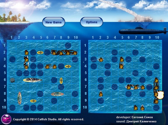

Battleship.
«Морской бой» — игра для двух участников, в которой игроки по очереди называют координаты на неизвестной им карте соперника. Если у соперника по этим координатам имеется корабль (координаты заняты), то корабль или его часть «топится», а попавший получает право сделать ещё один ход. Цель игрока — первым поразить все корабли противника.
Играть онлайн.